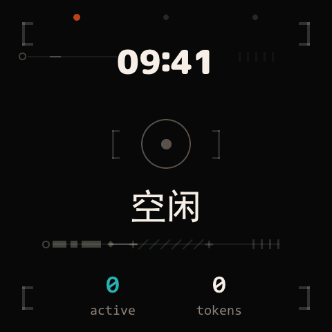
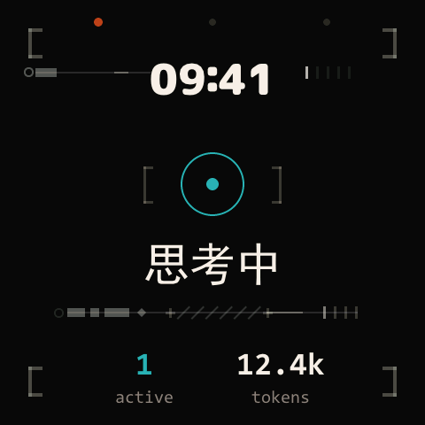
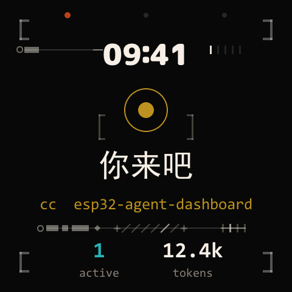
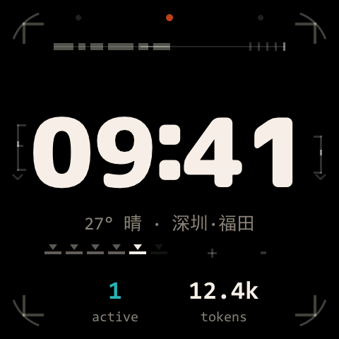
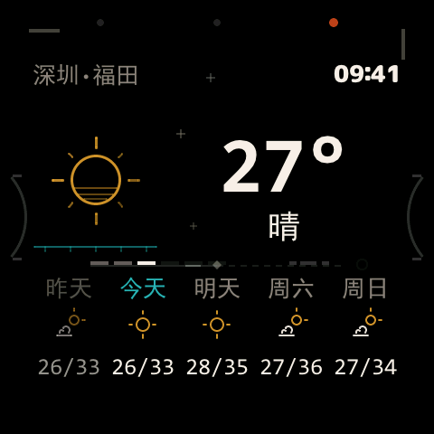
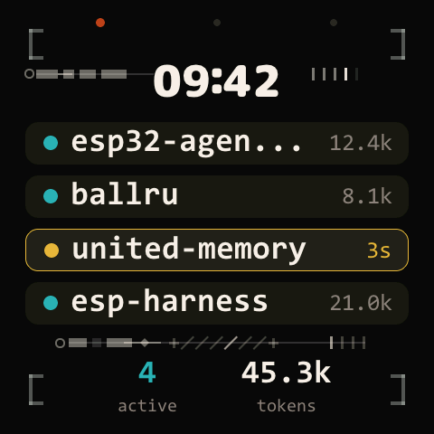

Your agents run in terminals you aren't watching. The expensive failure isn't a slow model — it's a finished one you don't notice. This 2.16″ AMOLED unit sits beside your keyboard and turns gold the moment an agent hands the turn back. Until then: a clock, the weather, a quiet ring.
live reconstruction — open the full 1:1 simulator ↗
Everything on the device is ambience except this chain. A hook fires when your agent stops, a resident bridge folds it into one state snapshot, one line of JSON crosses the USB serial link, and the panel pulls itself to the gold pose — one-shot, only on a fresh signal, never for stale state. Key away and it stays away for that round.
hook_dispatch.py stop
claude_buddy_bridge.py
dash snapshot {"agents":[…]}
接着来 · your move
The bridge is self-healing: hooks auto-start it, port loss is detected in under a second, every reconnect force-pushes config, time and the full snapshot. If the host goes silent the panel says so and retreats to the clock — it never freezes with a stale promise on screen.
One breathing ring is the only status glyph on the device, and its colour is a device-wide contract. No icon zoo, no badge counts — a glance from a metre away is the entire interface.



The decoration layer is held to the same rule: its brackets, ticks and arcs never take a colour of their own. When an agent hands the turn back, only their tempo rises.
No menus, no modes, no gestures. Three physical keys map to three views, one each; pressing the key of the view you're already on just flashes the frame. With two to four agents the dashboard becomes a fleet — waiting rows carry the gold.



Screenshots lie and timers lie, so every claim gets an instrument:
windowed render timing on-device (?perf), a
transition benchmark with a committed baseline that fails on
regression, a negative-space audit for the decoration layer, and
a ledger of optimisations that made things worse — kept on
file so they never get retried.
Vector scenes pre-composited to bitmaps at rest — transition frames blit instead of re-rasterising ~90 objects. Idle repaint −53%.
LVGL's anim timer never followed the raised refresh tier; syncing them cut per-frame dirty unions and raised drawn frames 15–35%.
The full mechanical-ornament layer, entrance deferred until actors land; holds the 66 ms idle tier at rest. First cut cost +58% — measured, redesigned.
The spec sheet said 466×466; on-device edge rulers
(?vis) proved all 480×480 visible, corner radius 76 — and
exposed a 7 px centring error every layout had inherited.
Damped harmonic oscillator LUTs, not easing presets. The clock morphs through font rungs across every scene change; shared elements recognise each other and hold still.
A second draw unit, full-screen coalescing, sprite-baking the ambient cluster — all "obviously right", all measured slower, all documented where they died.
Earlier versions did more, on purpose. A panel you must operate is just another terminal — what survived is an attention machine.
# toolkit: build / flash / console / screenshot git clone https://github.com/Caldis/esp-harness pip install -e esp-harness/tools/esp-harness/ git clone https://github.com/Caldis/esp32-agent-dashboard cd esp32-agent-dashboard esp-harness build --project . esp-harness flash --project . --port COM9 # the bridge (hooks auto-start it afterwards) python tools/claude_buddy_bridge.py serve \ --port-kind serial --port COM9 # no board? the tokeniser-exact mock runs everything but the glass python tools/mock_device_v1.py --port 9876 -v
Then point Claude Code's hooks at
tools/hook_dispatch.py — six events, one line
each. The dispatcher auto-starts the bridge and
circuit-breaks on timeouts, so a dead bridge can never stall
your session. Codex goes through codex_wrapper.py.
Full wiring in the
README.